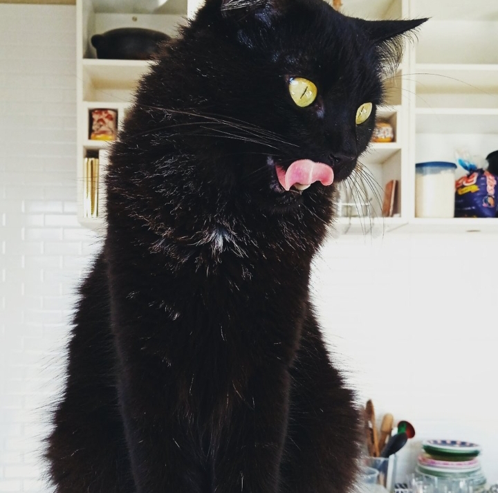

Sobre Mim

Oi! Meu nome é Mikaelly, tenho 19 anos e atualmente estou cursando faculdade. No meu tempo livre, gosto de jogar com meus amigos, assistir animes e ler mangás. Adoro comer doces e ouvir música, também sou apaixonada pela minha gatinha lilith que eu amo de mais!